| Introduction to Roblox Studio | Beginner Guide to Scripting | Advanced Guide to Scripting | Gui Guide |
|---|
A script is a small program that tells Roblox what to do. For example, you can write a script that opens a door when a player clicks a button, or one that keeps track of a player’s score. Scripts are written in Lua and are added to objects in your game.
There are a few types of scripts in Roblox:
Script: Runs on the server (used for game logic and multiplayer).
LocalScript: Runs on the client (used for UI and player input).
ModuleScript: Contains reusable code you can include in other scripts.
Open Roblox Studio and start a new project (Baseplate is a good choice).
In the Explorer, right-click on an object like a Part.
Choose Insert Object > Script.
A new window will open with a default line of code:
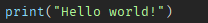Click Play (F5) to run the game. You’ll see "Hello world!" in the Output window.
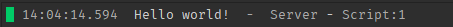That's your first sript!
Here are a few simple coding concepts you’ll need:
🧱 Variables
Variables store data:
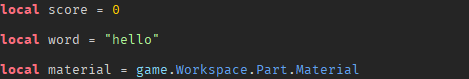🔁 Functions
Functions are blocks of code that do something:
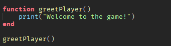📢 Events
Events let your game respond to actions:
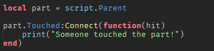🧠 Simple Scripting Example: Touch to Change Color
Insert a Part into the game.
Add a Script inside the part.
This is the code:
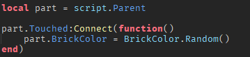Now when the player touches the part, it changes color!
🔁 Loops: Repeating Actions
Loops let you repeat code automatically, either a certain number of times or continuously while a condition is true.
1. While Loop
Runs the code as long as the condition is true.
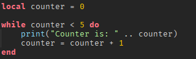This will print "Counter is: 0" up to "Counter is: 4" and stop.
2. For Loop
Great for running code a specific number of times.
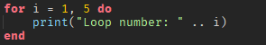This prints from 1 to 5. The loop ends when i reaches 5.
You can also count backwards:
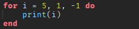3. Repeat Until Loop
This loop runs at least once, and repeats until the condition becomes true.
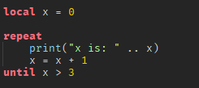This will run 4 times, printing x from 0 to 3.
⚡ Conditional Statements: Making Decisions
Conditional statements let your script decide what to do based on conditions.
1. If Statement
Runs code only if the condition is true.
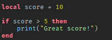2. If-Else Statement
Adds an alternative action if the condition is false.
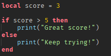3. If - ElseIf - Else
Check multiple conditions in a row.
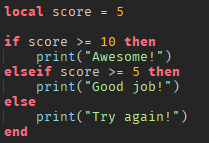Only one of the conditions will run, based on the value of score.
✅ Tips for Using Loops and If Statements
Use == to check if values are equal (not =).
Use and and or to combine conditions.
Be careful with infinite loops (like while true do) — always include a wait() inside them to avoid freezing Roblox Studio!
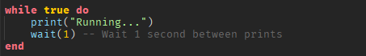Mastering loops and conditions is a big step forward in scripting! Once you understand these, you can build logic for enemies, timers, scoring systems, power-ups, and more.
🔄 3. Tables – Storing Multiple Values
Tables in Lua are like lists or containers.
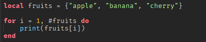Tables can also store key-value pairs:
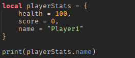Tables are very useful for inventories, leaderboards, or storing multiple players' data.
🧠 4. Variables and Scope
Variables store data and can be reused. You’ve seen local variables, which are limited to the current block of code.
If you declare a variable outside a function, it can be accessed globally (not recommended unless needed).
🧱 5. Object Properties and Manipulation
You can change objects in the game using scripts. Here are a few examples:
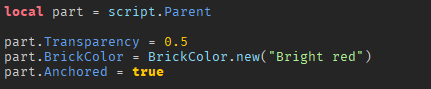You can also move parts using their Position or CFrame.
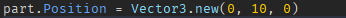🧼 6. Cleaning Up: Destroying and Disabling
You can remove objects from the game with :Destroy():
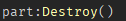…then you’re well on your way to becoming a Roblox game developer. Keep experimenting, break things on purpose, and fix them — that's how real programmers learn.